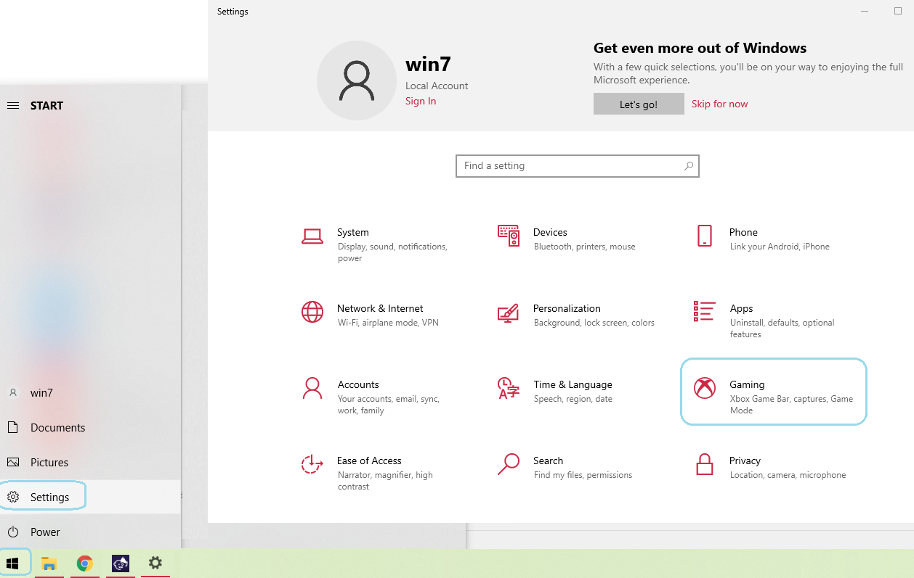
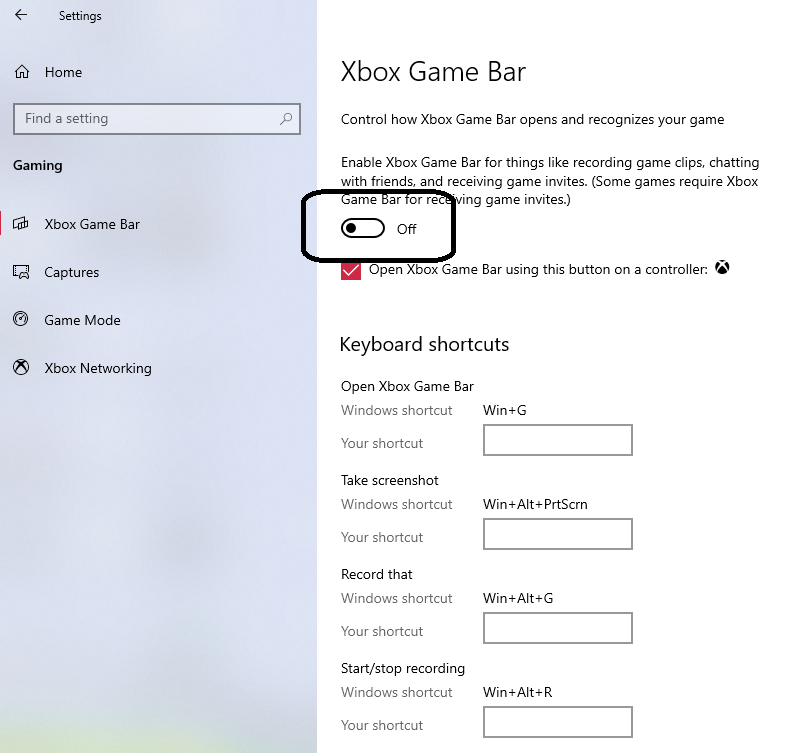

Animaze Desktop: How does turning off game mode increase performance?
When you use Game Mode, Windows prioritizes your gaming experience. When you’re running a game, Game Mode:
Prevents Windows Update from performing driver installations and sending restart notifications.
Helps achieve a more stable frame rate depending on the specific game and system.
To turn Game Mode on or off:
Press the Start button, and then select Settings.
Choose Gaming > Game Mode.

Turn Game Mode On or Off.

You can read more information about Window’s game mode here